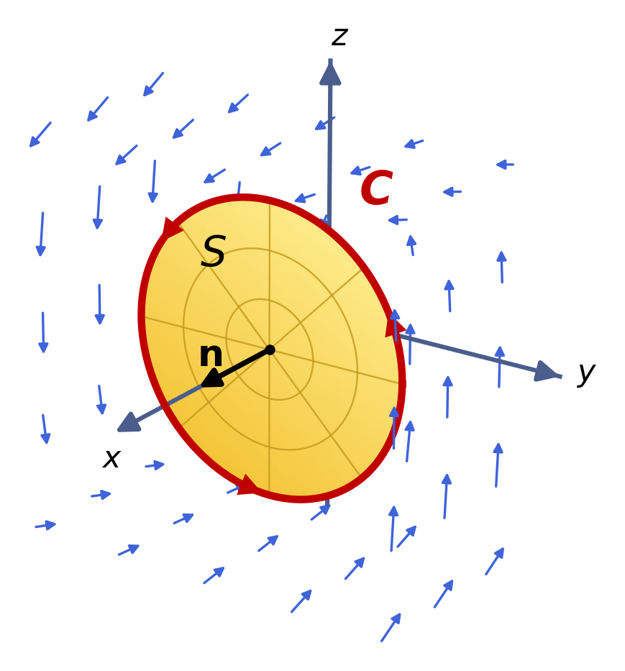

Lesson 45: Stokes' Theorem
Green’s Theorem showed that the work done by a vector field around a closed curve in the plane equals a double integral over the region inside the curve. Stokes’ Theorem extends this idea to three dimensions. The work done around a closed curve \(C\) in space equals a surface integral over any surface \(S\) whose boundary is \(C\).

Let \(S\) be an oriented, piecewise-smooth surface bounded by a simple, closed, piecewise-smooth curve \(C\) with positive orientation. Let \(\mathbf{F}\) be a vector field whose components have continuous partial derivatives on an open region containing \(S\). Then:
Stokes' Theorem
Put simply, the work done by \(\mathbf{F}\) around the boundary curve \(C\) equals the surface integral of \((\operatorname{curl}\mathbf{F}) \dotp \mathbf{n}\) over the surface \(S\).
Positive orientation means the direction of \(C\) and the normal \(\mathbf{n}\) follow the right-hand rule: curl the fingers of your right hand in the direction of \(C\), and your thumb points in the direction of \(\mathbf{n}\).
An Example
Let \(\mathbf{F}(x, y, z) = \langle 0, -z, y \rangle\), and let \(C\) be the curve \(\mathbf{r}(t) = \langle 2, 3\cos t, 3\sin t \rangle\), \(0 \le t \le 2\pi\).
- Find the work done by \(\mathbf{F}\) around \(C\) directly, using the line integral.
- Confirm your result using Stokes’ Theorem.
Part (a)
Along the curve, \(y = 3\cos t\) and \(z = 3\sin t\), so \(\mathbf{F}(\mathbf{r}(t)) = \langle 0, -3\sin t, 3\cos t \rangle\).
Part (b): Let \(S\) be the disk in the plane \(x = 2\) bounded by \(C\).
Both methods give \(18\pi\).
An Example
Find the work done by the vector field \(\mathbf{F}\) as a particle moves once around the closed curve \(C\). Use Stokes’ Theorem and the given surface \(S\).
On the surface, \(x = u\) and \(z = 1 - u - v\).
An Example
Find the work done by the vector field \(\mathbf{F}\) as a particle moves once around the closed curve \(C\). Use Stokes’ Theorem and the given surface \(S\).
On the surface, \(x = u\) and \(y = v\).
Notice how Stokes’ Theorem lets us avoid the difficult terms \(\sin\left(x^3\right)\) and \(\cos\left(z^4\right)\) entirely.